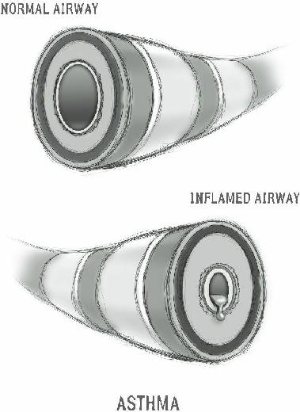

Acetazolamide prescription in case of emergency. The other medications mentioned will be more difficult to obtain, however, as they may have more side effects.
There is some evidence that Gingko Biloba may be helpful in the natural prevention of altitude sickness. A small amount of an extract of this substance has been shown to allow the brain to tolerate lower oxygen levels.
Native Americans have used Gingko for Acute Mountain
Sickness for centuries with beneficial effect.

Many in the preparedness community either already have or are planning to have a rural retreat for when things go south. This means that, if you expect to live or at least spend time in a remote location, you’ll have the responsibility to not only defend it from hordes of marauding zombies, but also acts of nature such as the occasional wildfire.
Fire is one of nature’s ways to renew the land. Some seeds, such as those of the lodge pole pine, actually require fire to help them germinate. Despite the longterm beneficial effect to the forest, fire is an issue that presents a danger to the humans in it. Although wildfires may occur at any time of year, summertime in droughtprone areas is a particularly dangerous time.
Once you are in your homestead or long-term retreat, you’ll have to take a look around to evaluate the risk level of natural as well as man-made catastrophes.
One thing that’s important is what we call
“vegetation management”. Your goal is to direct fires away from your shelter. There are a few ways to do this: you’ll want to clean up dead wood lying on the ground close to your buildings and off the roofs. Keep woodpiles and other flammables away from structures.
Also, you’ll have to remove some of the living vegetation from around your home. This is counter to some advice you’ll get regarding keeping your home invisible, and it means that you’d have to remove those thorny bushes you’ve planted under your windows for defense purposes. This can be a tough decision, but you just might have to make a choice between fire protection and privacy.
Another factor to consider is the material that your retreat is made of. How much fire resistance does your structure have? A wood frame home with wooden shingles will go up like a match in a wildfire. If you are constructing a place to live in times of trouble, you should try to build as much flame resistance into your home as possible.
So, let’s create a defensible space. A defensible space is an area around a structure where wood and vegetation are treated, cleared or reduced to slow the spread of wildfire towards a structure. Having a defensible space will also provide room to work for those fighting the fire.
The amount of defensible space you’ll need depends on whether you’re on flat land or on a steep slope.
Flatland fires spread more slowly than a fire on a slope
(hot air and flames rise). A fire on a steep slope with wind blowing uphill will spread quickly and produces
“spot fires”. These are small fires that ignite vegetation ahead of the main burn, due to small bits of burning debris in the air.
Some landscaping may be necessary to decrease the chance of fire spreading in your direction. You’ll want to thin out those thick canopied trees near your house. Any nearby tree within 50 feet on flatland, or 200 feet if downhill from your retreat on top of the mountain, needs to be thinned. You will prune branches off below 10-12 feet high, and separate them by 10-20 feet. Also, eliminate all shrubs at the base of the trunks.

Other things you should do:
Clean up all dead wood in the area.
Stack firewood at least 20 feet from any building.
Keep gardening tools and other items stored away.
Of course, once you have a defensible space, the natural inclination is to want to defend it, even against a forest fire. Unfortunately, you have to remember that you’ll be in the middle of a lot of heat and smoke. Unless you’re a
22 year old Navy Seal in full fire gear and mask, you’re probably not going to be able to function effectively.
Even if you ARE a 22 year old Navy Seal, you’ll have to take the others under your care into account.
The safest option for all involved would be to hit the road if there’s a way out. It’s a personal decision, but it should also be a realistic one.
If you’re leaving, have your supplies already in the car, as well as any important papers you might need to keep and some cash. If you have electricity, make sure you shut off any air conditioning system that draws air into the house from outside. Turn off all your appliances, close all your windows and lock all your doors. Like any other emergency, you should have some form of communication open with your loved ones so that you can contact each other.
If there is any possibility that you might find yourself in the middle of a fire, make sure you’re dressed in long pants and sleeves and heavy boots. A wool blanket is very helpful as an additional outside layer because wool is relatively fire-resistant. If you don’t have wool blankets, this is a good time to add some to your storage, or keep some in your car.
If you’re in a building, stay on the side of the building farthest from the fire outside. Choose a room with the least number of windows –(windows transfer heat to the inside). Stay there unless you have to leave due to smoke or the building catching fire.
If that’s the case and you have to leave, wrap yourself in that blanket, leaving only your eyes uncovered. Some people think it’s a good idea to wet the blanket first. Don’t. Wet materials transfer heat much faster than dry materials and will cause more severe burns.
If you’re having trouble breathing because of the smoke, stay low, and crawl out of the building if you have to. There’s less smoke and heat the lower you go.
Keep your face down towards the floor. This will protect your airway. Don’t forget to have some eye wash in your supplies; the smoke will irritate your eyes.
If you ever encounter a person that is actually on fire, you have to act quickly. In circumstances where a person’s clothes are on fire, remember the old adage
“Stop, Drop, and Roll”.
Stop: Your patient will be panicked and likely running around trying to put out the flames.
This generates wind which will fan the flames.
Stop the patient from running away.
Drop: Knock the patient to the ground and wrap tightly with a wool blanket. Heavy fabrics are best.
Roll: Roll the patient on the floor until the flames are extinguished. Immediately cool any burned areas of skin with copious amounts of water.
Smoke Inhalation
Other than burns, which are discussed in another part of this book, you can become seriously ill or even die simply from inhaling too much smoke. remember, you can heal from burns on your skin, but you can’t heal from burns in your lungs. The scars from the burns will damage the lungs’ ability to absorb oxygen and could cause permanent damage. Common causes include:
Simple Combustion: Combustion uses up oxygen near a fire and can kill a person simply from oxygen deficit. This is called “hypoxia”.
The larger the fire, the more oxygen it removes from the area. This is particularly troublesome in a closed space, such as a building fire.
Carbon Dioxide: Some by-products of smoke may not directly kill a person, but could take up the space in the lungs that Oxygen would ordinarily use. Even the expulsion of a large bubble of Carbon Dioxide can kill wildlife near it, such as in the example of “swamp gas”.
Chemical irritants: Many chemicals founds in smoke can cause irritation injury when they come in contact with the lung. This amounts to a burn inside the lung tissue, which causes swelling and airway obstruction. Chlorine gas used in World War I is an example of a deadly chemical irritant.
Other asphyxiants: Carbon Monoxide, Cyanide, and some Sulfides may interfere with the body’s ability to utilize oxygen. Carbon monoxide is the most common of these.
Symptoms may include:
Cough
Shortness of breath
Hoarseness
Upper airway spasm
Eye irritation
Headaches
Pale, bluish or even bright red skin
Loss of consciousness leading to coma or death
Your evaluation of the patient with smoke inhalation may show soot around the mouth, in the throat, and in nasal passages. Both of these areas may be swollen and irritated. The victim will likely be short of breath and have a hoarse voice.
Of course, you will want to get your patient out of the smoky area and into an environment where there is clean air. This may not be as easy as it seems in a major fire. You must be very careful not to put yourself in a situation where you are likely to succumb to smoke inhalation yourself. Always consider a surgical mask or even a gas mask before entering a conflagration to rescue a victim. Be prepared to use CPR if necessary.
It is important to have some way to deliver oxygen to your patient if needed. There are many portable commercially-available canisters which would be useful to get oxygen quickly into the lungs.
Don’t expect a rapid recovery from significant smoke inhalation. Your patient will be short of breath with the slightest activity and will be very hoarse. These symptoms may go away with time, or may be permanent disabilities.
Prevention by planning escape routes and having regular drills will allow your people to get out of dangerous situations quickly. Make sure everyone knows what to do in advance.

There are few people who haven’t been in the path of a major storm at one point or another. Most of those in the path of an oncoming storm will not have planned for its arrival. Some will even openly flaunt their disregard by seeking exposed areas. This is an instance where a lack of common sense can have dire consequences.
If you fail to plan ways to protect yourself and your family, you may find yourself having to treat significant traumatic injuries in the immediate aftermath. Loss of your shelter may expose your family to hypothermia or heat stroke. Later, flooding may contaminate your water supplies and expose you to serious infectious disease.
Preparing to weather the storm safely will avoid major medical problems for you, as medic, later on.
A tornado is a violently rotating column of air that is in contact with both the surface of the earth and the thunderstorm (sometimes called a “supercell”) that spawned it. From a distance, tornadoes usually appear in the form of a visible dark funnel with all sorts of flying debris in and around it. Because of rainfall, they may be difficult to see when close up.
A tornado (also called a “twister”) may have winds of up to 300 miles per hour, and can travel for a number of kilometers or miles before petering out. They may be accompanied by hail and will emit a roaring sound that will remind you of a passing train. I have personally experienced this, and I can tell you that it is terrifying.
There are almost a thousand tornadoes in the United
States every year, more than are reported in any other country. Most of these occur in “Tornado Alley”, an area that includes Texas, Oklahoma, Missouri, Kansas,
Arkansas, and neighboring states. Spring and early summer are the peak seasons.
Injuries from tornadoes usually come as a result of trauma from all the flying debris that is carried along with it. Strong winds can carry large objects and fling them around in a manner that is hard to believe. Indeed, there is a report that, in 1931, an 83 ton train was lifted and thrown 80 feet from the tracks.
Tornadoes are categorized by something called the
Fujita Scale, from level 0-5, based on the amount of damage caused:
F0 Light: Broken tree branches, mild structural damage, some uprooted
F1 Moderate: Broken windows, small tree trunks broken, overturned mobile homes, destruction of carports or toolsheds, roof tiles missing
F2 Considerable: Mobile homes destroyed, major structural damage to frame homes due to flying debris, some large trees snapped in half or uprooted
F3 Severe: Roofs torn from homes, small frame homes destroyed, most trees snapped and uprooted
F4 Devastating: Strong-structure buildings damaged or destroyed or lifted from foundations, cars lifted and blown away, even large debris airborne
F5 Incredible: Larger buildings lifted from foundations, trees snapped, uprooted and debarked, objects weighing more than a ton become airborne missiles
Although some places may have sirens or other methods of warning you of an approaching twister, it is important to have a plan for your family to weather the storm.
Having a plan BEFORE a tornado approaches is the most likely way you will survive the event. Children should be taught where to find the medical kits and how to use a fire extinguisher. If possible, teach everyone how to safely turn off the gas and electricity.
If you see a twister funnel, take shelter immediately.
If your domicile is a mobile home, leave! They are especially vulnerable to damage from the winds. If you live in a mobile home and there is time, get to the nearest building that has a tornado shelter; underground shelters are best. If you live in Tornado Alley, consider putting together your own underground shelter.
Unlike bunkers and other structures built for longterm protection, a tornado shelter has to provide safety for a short period of time. As such, it doesn’t have to be very large; 8-10 square feet per person would be acceptable. Despite this, be sure to consider ventilation and the comfort or special needs of those using the shelter.
If you don’t have a shelter, find a place where family members can gather if a tornado is headed your way.
Basements, bathrooms, closets or inside rooms without windows are the best options. Windows can easily shatter from impact due to flying debris.
For added protection, get under a heavy object such as a sturdy table. Covering up your body with a sleeping bag or mattress will provide an additional shield. Discuss this plan of action with each and every member of your family or group in such a way that they will know this process by heart.
If you’re in a car and can drive to a shelter, do so.
Although you may be hesitant to leave your vehicle, remember that they can be easily tossed around by high winds; you may be safer if there is a culvert or other area lower than the roadway.
In town, leaving the car to enter a sturdy building is appropriate. If there is no other shelter, however, staying in your car will protect you from some of the flying debris. Keep your seat beat on, put your head down below the level of the windows, and cover yourself if at all possible.
If you are, say, on a hike and caught outside when the tornado hits, stay away from wooded areas. Torn branches and other debris become missiles, so an open field or ditch may be safer. Lying down flat in a low spot in the ground will give you some protection. Make sure to cover your head if at all possible, even if it’s just with your hands.
A hurricane is a large tropical storm with winds that have reached a constant speed of 74 miles per hour or more. In the United States, hurricanes regularly ravage the Gulf or East Coast, causing billions of dollars of damage. Even in high-risk hurricane zones, most people are completely unprepared for the severe rain, winds, flooding, and general mayhem that these storms can cause.
Certainly, these storms can be severe, but they don’t have to be life-threatening. Unlike tornados, which can pop up suddenly, hurricanes are first identified when they are hundreds, if not thousands of miles away. We can watch their development and have a good idea of how bad it might get and how much time we have to get ready.
Like tornados, hurricanes are categorized based on severity using the Saffir-Simpson Hurricane Wind Scale.
Wind speeds below are “maximum sustained”, meaning continuously reaching up to the numbers below when the storm hits:
Category 1: 74-95 miles per hour
Category 2: 96-110 miles per hour
Category 3: 111-130 miles per hour
Category 4: 131-155 miles per hour
Category 5: Greater than 155 miles per hour
Higher category storms may cause incredible damage and loss of life, such as occurred in Hurricane Katrina in
2005. You will have to put together an effective plan of action with regards to shelter, food, power, and other important issues. You may also have to make a decision regarding evacuation. Unlike some disaster scenarios, you can actually outrun one of these storms if you get enough of a head start.
If you live on the coast or in an area that has flooding, there will be rising waters (known as the
“storm surge”) that might be enough of a reason to leave. The authorities will issue an evacuation order in many cases. If you live in pre-fabricated housing, such as a trailer, or near the coast, it just might be a good idea. Cities may no longer have plans for civil defense, but they still do for hurricanes in regions at risk.
Oftentimes, the municipality will assign a hurricaneresistant public building in your own community as a designated shelter.
If you do choose to leave town, plan to go as far inland as possible. Hurricanes get their strength from the warm water temperatures over the tropical ocean; they lose strength quickly as they travel over land. One caveat here: If you live on the Florida peninsula, you might want to head north. The southern part of the state is relatively thin and might provide less protection than other areas.
Speaking from personal experience, Hurricane Wilma in 2005 hit Florida’s West Coast and still caused damage to our home just a few miles from Florida’s East Coast.
It might be a wise move to make reservations at a hotel early; there will be little room at the inn for latecomers.
In any case, this is the time to check out that “bugout bag” of yours to make sure it’s ready to go.
Although most people pack for 72 hours off the grid, that number is relatively arbitrary; be prepared to at least have a week’s supply of food and drinking water, as well as medical supplies.
Usually, you will not be told to leave your homes
(except in the cases mentioned above). As such, your planning will determine how much damage you sustain and how much risk you place yourself in. You should have an idea of what your home’s weak spots are. For instance, do you know what amount of sustained wind your structure can withstand?
Since South Florida was devastated by Hurricane
Andrew in 1992, new homes in South Florida must have the strength to withstand 125 mph winds. Most homes, however, are made to handle 90 mph (hurricane strength is >74 mph). If the coming storm has sustained winds over that level, you may not be able to depend on the structural integrity of your home.
If you decide to stay, make sure you designate a safe room somewhere in the interior of the house. It should be in a part of the home most downwind from the direction of the oncoming hurricane. Figure out who’s coming to ride out the storm with you, and plan for any special needs they may have.
Make provisions for any animals you will be sheltering and move all outdoor furniture and potted plants either inside the house or up against the outside wall, preferably secured with chains. Don’t forget to put up the hurricane shutters if you have them.
One special issue for South Floridians is coconuts:
They turn into cannonballs in a hurricane. Cut them off the tree before the winds come. Interestingly, the palm trees themselves, as they don’t have a dense crown, seem to weather most high winds without a problem.
Indoor planning is important, as well.
Communications may be out in a major storm, so have a
NOAA weather radio and lots of fresh batteries. You will likely lose power, so fill up your gas and propane tanks early in every hurricane season. Install foot and head bolts on double entry doors.
As the storm approaches, you’ll want to fill up bathtubs and other containers with water. Turn your refrigerator and freezer down to their coldest settings, so that food won’t spoil right away if the power fails. Make sure you know how to shut off the electricity, gas and water, if necessary.
There’s another kind of power you should be concerned about. In the aftermath of a storm, credit card verification may be down; without cash, you may have no purchasing power at all.
Of course, have some waterproof tarps available, in case of lost shingles, etc. The roofers are going to be pretty busy after a major storm, and might not get to you right away. In South Florida after Hurricane Wilma in 2005, there were still blue tarps on roofs more than a year later.
If you’ve hunkered down in your home during the storm, make sure that you’ve got books, board games, and light sources for when the power goes down. Kids
(and most adults) go stir crazy when stuck inside, especially if they don’t have TVs or computers in service. Here’s where you will finally be thankful for those battery-powered hand-held gaming devices.
Take time to discuss the coming storm in advance;
this will give everyone an idea of what to expect, and keep fear down to a minimum. Give the kids some responsibility, as well. Give them the opportunity to pack their own bag or select games to play. This will keep their minds busy and their nerves calm.
After the storm, inland flood water may be polluted.
Do not walk around in, drink nor bathe in this water.
Thorough sterilization is required. Do not eat fresh food that has come in contact with floodwater; if cans of food have been exposed to the water, wash them off with soap and clean hot water before opening.
Also, watch for downed power lines; they have been the cause of a number of electrocutions. In some cases, entire families have lost their lives jumping into electrified water to save a relative. You should never touch someone who has been electrocuted without first shutting off the power source; if you can’t shut off the power, you will have to move the victim. Use a nonmetal object, such as a wooden broom handle or dry rope. If you don’t, the current could pass through the individual’s body and shock you.
Hurricanes are more significant for residents of the Gulf or East Coasts of the United States, but the West Coast and even some areas of the Midwest have their own disaster to worry about: Earthquakes. Some populated areas are near “fault lines”. A fault is a fracture in a volume of base rock. This is an area where earth movement releases energy that can cause major surface disruptions or “earthquakes”. This movement is sometimes called a “seismic wave”.
The strength of an earthquake is measuring using the
Richter Scale. This measurement (from 0-10 or more)
identifies the magnitude at a certain location. Quakes less than 2.0 on the Richter Scale may occur every day, but are unlikely to be noticed by the average person. Each increase of 1.0 magnitude increases the strength by a factor of 10. The highest registered earthquake was The
Great Chilean Earthquake of 1960 (9.5 on the Richter
Scale).
If the energy is released offshore, a “tsunami” or tidal wave may develop. In Fukushima, Japan, a powerful earthquake (8.9 on the Richter Scale) and tsunami wreaked havoc in 2011, causing major damage, loss of life, and meltdowns in local nuclear reactors.
A major earthquake is especially dangerous due to the lack of notice given beforehand. Make sure each member of your family knows what to do no matter where they are when an earthquake occurs. Unless it happens in the dead of night, it’s unlikely you will all be in the house together. Planning ahead will give you the best chance of keeping you family together and make the best of a bad situation.
To be prepared, you’ll need, at the very least, the following:
Food and water
Power sources
Alternative shelters
Medical supplies
Clothing appropriate to the weather
Fire extinguishers
Means of communication
Money (don’t count on credit or debit cards being good if the power’s down)
An adjustable wrench to turn off gas or water
Figure out where you’ll meet in the event of tremors.
Find out the school system’s plan for earthquakes so you’ll know where to find your kids. It would be appropriate to always have a “get-home” bag put together. Some food, liquids, and a pair of sturdy, comfortable shoes are useful items to keep in your car.
Especially important to know is where your gas, electric and water main shutoffs are. Make sure that everyone has an idea of how to turn them off if there is a leak or electrical short. Know where the nearest medical facility is, but be aware that you may be on your own; medical responders are going to have their hands full and may not get to you quickly.
Look around your house for fixtures like chandeliers and bookcases that might not be stable enough to withstand an earthquake. Flat screen TVs, especially large ones, could easily topple. Especially be sure to check out kitchen and pantry shelves; it’s probably not a great idea to hang that big mirror over the headboard of your bed, either.
What should you do when the tremors start? If you’re indoors, get under a table, desk, or something else solid or get into an inside hallway. You should stay clear of windows, shelves, and kitchen areas. While the building is shaking, don’t try to run out; you could easily fall down stairs or get hit by falling debris. I had always thought you should stand in the doorway because of the frame’s sturdiness, but it turns out that, in modern homes, doorways aren’t any more solid than any other part of the structure.
Once the initial tremors are over, you can go outside.
Once there, stay as far away from power lines, chimneys, and anything else that could fall on top of you.
You could, possibly, be in your automobile when the earthquake hits. Get out of traffic as quickly as possible;
other drivers are likely to be less level-headed than you are. Don’t stop under bridges, trees, overpasses, power lines, or light posts. Don’t leave your vehicle while the tremors are active.
One issue to be concerned about is gas leaks; make sure you don’t use your camp stoves, lighters, or even matches until you’re certain all is clear. Even a match could ignite a spark that could lead to an explosion. If you turned the gas off, you might consider letting the utility company turn it back on.
Don’t count on telephone service after a natural disaster. Telephone companies only have enough lines to deal with 20% of total call volume at any one time. It’s likely all lines will be occupied. Interestingly, this doesn’t seem to include texts; you’ll have a better to chance to communicate by texting than by voice due to the wavelength used.
In a survival situation, we may have to vacate our home and head to unfamiliar territory. During our sojourn, we will expose ourselves to insect stings, poison oak and ivy, and strange food items that we aren’t accustomed to. When a negative physical response occurs due to a particular substance, we call it an “allergy”. This substance is greatly hazardous only to those who are allergic.
Foreign substances that cause allergies are called
“allergens”. Our response to them can be negligible or it can be life-threatening. If severe enough, we refer to it as “anaphylaxis” or “anaphylactic shock”. Anaphylaxis is the word used for serious and rapid allergic reactions usually involving more than one part of the body which, if severe enough, can be fatal.
Minor and Chronic Allergies
Mild allergic reactions usually involve local itching and the development of a patchy, raised rash on the skin.
These types of reactions can be transient and go away by themselves or with medications such as
Diphenhydramine (Benadryl).
Chronic allergies may manifest as a skin condition known as “eczema”. This will be a red patchy rash in different places which is itchy and flaky. This type of rash usually responds well to 1% hydrocortisone cream
(non-prescription), although sometimes a stronger steroid cream such as Clobetasol (prescription) may be necessary. In the very worst cases, chronic dermatitis
(inflammation of the skin) may require oral steroids such as Prednisone.
If the allergic reaction is minor, there are various essential oils you can apply to relieve symptoms such as itching:
Peppermint lavender
Chamomile (German or Roman)
Calendula
Myrrh
Cypress
Helichrysum
Wintergreen eucalyptus
Blue Tansy
To use the above oils, you would dilute 50/50 with carrier oil (olive or coconut, for example) and apply 2 drops to the affected area.
Other natural substances that you could apply to a rash include witch hazel, oatmeal baths or compresses,
Aloe Vera, Shea butter and vitamin E oil. Apply to the affected area as needed.
Hay Fever
Hay Fever, also known as “allergic rhinitis” or “seasonal allergy”, is a collection of symptoms, mostly affecting the eyes and nose, which occur when you breathe in something you are allergic to. Examples of allergens would include dust, animal dander, insect venom, fungi, or pollens. Sufferers of allergic rhinitis would present with:
Nasal congestion
Sneezing
Red eyes with tearing
Itchy throat, eyes, and skin
Antihistamines such as Claritin and Benadryl are old standbys for this type of allergy. Alternative therapies for hay fever include essential oils for use on the skin:

German chamomile
Roman chamomile lavender eucalyptus ginger.
Apply 2 drops to each temple, 2-4 times per day. Steam inhalation, 1 drop of the oil to a bowl of steaming water, involves covering the head with a towel and inhale slowly for 15 minutes. A number of teas to drink that may be useful are licorice root, stinging nettle, and St.
John’s Wort. Drink 1 cup daily 3 times a day.
Neti pot
A Neti Pot is a useful item to have to deal with allergic reactions affecting the nasal passages. It looks like a small teapot. Neti pots wash out pollen, clears congestion and mucus, and decreases nasal inflammation. Use with sterile saline (salt water) solution daily in the following fashion:
Bend over a sink.
Tilt your head to one side.
Keep your forehead and chin are at the same level to keep water out of your mouth.
Breathe through your mouth during the procedure.
Insert the spout gently into your uppermost nostril.
Pour the solution so that it drains through the lower nostril.
Blow your nose to clear your nostrils.
Change head position and repeat with the other nostril.
Recently, there have been concerns about neti pots from the The Food and Drug Administration (FDA). They warn that, if not used properly, the patient runs the risk of developing serious (even life-threatening) infections.
Neti pots are meant to be used with STERILIZED saline;
in 2011, two people lost their lives after using contaminated tap water.

Asthma
Asthma is a chronic condition that affects your ability to breathe. It affects the airways, which are the tubes that transport air to your lungs. When people with asthma are exposed to a substance that they are allergic to (an
“allergen”), these airways become inflamed. As the airways become swollen, the diameter of the airway decreases and less air gets to the lungs. As such, you will develop shortness of breath, tightness in your chest, and start to wheeze and cough. This is referred to as an
“asthma attack”.
In rare situations, the airways can become so constricted that a person could suffocate from lack of oxygen. This extreme condition is sometimes referred to as “Status Asthmaticus”. Here are common allergens that trigger an asthmatic attack:
Pet or wild animal dander
Dust or the excrement of dust mites
Mold and mildew
Smoke
Pollen
Severe stress
Pollutants in the air
Some medicines
Exercise
There are many myths associated with asthma; the below are just some:
Asthma is contagious. (False)
You will grow out of it. (False-it might become dormant for a time but you are always at risk for it returning)
It’s all in your mind. (False)
If you move to a new area, your asthma will go away. (False – it may go away for a while, but eventually you will become sensitized to something else and it will likely return)
Here’s a “true” myth: Asthma is, indeed, hereditary. If both parents have asthma, you have a 70% chance of developing it compared to only 6% if neither parent has it.
Asthmatic symptoms may be different from attack to attack and from individual to individual. Some of the symptoms are also seen in heart conditions and other respiratory illnesses, so it’s important to make the right diagnosis. Symptoms may include:
Cough
Shortness of Breath
Wheezing (usually sudden)
Chest tightness (sometimes confused with coronary artery spasms/heart attack)
Rapid pulse rate and respiration rate
Anxiety
Besides these main symptoms, there are others that are signals of a life-threatening episode. If you notice that your patient has become “cyanotic”, they are in trouble.
Someone with cyanosis will have blue/gray color to their lips, fingertips, and face.
You might also notice that it takes longer for them to exhale than to inhale. Their wheezing may take on a higher pitch. Once the patient has spent enough time without adequate oxygen, they will become confused, then drowsy, and then possibly lose consciousness.
To make the diagnosis, use your stethoscope to listen to the lungs on both sides. Make sure that you listen closely to the bottom, middle, and top lung areas.
In a mild asthmatic attack, you will hear relatively loud, musical noises when the patient breathes for you. As the asthma worsens, less air is passing through the airways and the pitch of the wheezes will be higher and perhaps not as loud. If no air is passing through, you will hear nothing, not even when you ask the patient to inhale forcibly. This person is in trouble.
You can measure how open your airways are with a simple diagnostic instrument known as a peak flow meter. It can help you identify if a patient’s cough is part of an asthma attack or not, or whether they are having a panic attack instead. It also identifies the severity of respiratory compromise.
This is what you do: Take your patient’s peak flow meter instrument and then (forcefully) exhale into it.
This will give you a baseline reading of their normal baseline air flow. Then, when they’re having an attack, have them blow into it again.
In moderate asthma, peak flow will be reduced 2040%. Greater than 50% is a sign of a severe episode. In a non-asthma related cough or upper respiratory infection, your peak flow will be close to normal. The same goes for a panic attack; even though you may feel short of breath, your peak flow is still about normal.
The cornerstones of asthma treatment are the avoidance of “trigger” allergens and the maintenance of open airways. Medications come in one of two forms:
drugs that give quick relief from an attack and drugs that control the frequency of asthmatic episodes.
Quick relief drugs include inhalers that open airways
(known as bronchodilators), such as Albuterol (Ventolin,
Proventil), among others. These drugs should open airways in a very short period of time and give significant relief. These drugs are sometimes useful for people going into a situation where they are exposed to a known “trigger”, such as before strenuous exercise.
Don’t be surprised if you notice a rapid heart rate on these medications; it’s a common side effect.
If you find yourself using quick-relief asthmatic medications more than twice a week, you are a candidate for daily control therapy. These drugs work
(when taken daily) to decrease the number of episodes and are usually some form of inhaled steroid. There are long-acting bronchodilators as well, such as ipratropium bromide (Atrovent). Another family of drugs known as
Leukotriene Modifiers prevents airway swelling before an asthma attack even begins. These are usually in pill form and may make sense for storage purposes. The most popular is Montelukast (Singulair).
Often, medications will be used in combination, and you might find multiple medications in the same inhaler.
U.S. commercial product Advair, for example, contains both a steroid and an airway dilator. remember that inhalers lose potency over time. An expired inhaler, unlike many pills or tablets, will lose potency relatively quickly.
It’s important to figure out what allergens trigger your asthma attacks and work out a plan to avoid them as much as possible. Furthermore, make sure to stockpile as much of your asthma medication as possible in case of emergency. Physicians are usually sympathetic to requests for extra prescriptions from their asthmatic patients.
In mild to moderate cases, you might consider the use of natural remedies. There are actually quite a few substances that have been reported to be helpful:
Ginger and Garlic Tea: Put four minced garlic cloves in some ginger tea while it’s hot. Cool it down and drink twice a day. Some have reported a beneficial effect with just the garlic.
Other herbal teas: Ephedra, Coltsfoot,
Codonopsis, Butterbur, Nettle, Chamomile, and
Rosemary all have the potential to improve an asthmatic attack.
Coffee: Black unsweetened coffee is a stimulant that might make your lung function better when you are having an attack. Don’t drink more than 12 ounces at a time, as coffee can dehydrate you. Interestingly, coffee is somewhat similar in chemical structure to the asthma drug Theopylline.
Eucalyptus: Essential oil of eucalyptus, used in a steam or direct inhalation, is well-known to open airways. Rub a few drops of oil between your hands and breathe in deeply. Alternatively, a few drops in some steaming water will be good respiratory therapy.
Honey: Honey was used in the 19th century to treat asthmatic attacks. Breathe deeply from a jar of honey and you should see improvement in a few minutes. To decrease the frequency of attacks, stir one teaspoon of honey in a twelve ounce glass of water and drink it three times daily.
Turmeric: Take one teaspoon of turmeric powder in 6-8 ounces of warm water three times a day.
Licorice and Ginger: Mix licorice and ginger
(1/2 teaspoon of each) in a cup of water.
Warning: Licorice can raise your blood pressure.
Black Pepper, Onion, and Honey: Drink ¼ cup of onion juice with a tablespoon of honey, after adding 1/8 tablespoon of black pepper.
Mustard Oil Rub: Mix mustard oil with camphor and rub it on your chest and back.
There are claims that it gives instant relief in some cases.
Gingko Biloba leaf extract: Thought to decrease hypersensitivity in the lungs; not for people who are taking aspirin or ibuprofen daily, or anticoagulants like Coumadin.
Vitamin D: Some asthmatics have been diagnosed with Vitamin D deficiency.
Lobelia: Native Americans actually smoked this herb as a treatment for asthma. Instead of smoking, try mixing tincture of lobelia with tincture of cayenne in a 3:1 ratio. Put 1 milliliter (about 20 drops) of this mixture in water at the start of an attack and repeat every thirty minutes or so.
With a number of these substances, further research is necessary to corroborate the amount of effect that they have on severe asthma, so take standard medications if your peak flow reading is 60% or less than normal.
Don’t underestimate the effect of your diet on your condition. Asthmatics should:
Replace animal proteins with plant proteins.
Increase intake of Omega-3 fatty acids
Eliminate milk and other dairy products.
Eat organically whenever possible.
Eliminate trans-fats; use extra-virgin olive oil as your main cooking oil.
Always stay well-hydrated; more fluids will make your lung secretions less viscous.
Finally, various breathing methods, such as taught in
Yoga classes, are thought to help promote well-being and control the panic response seen in asthmatic attacks.
Acupuncture is thought by some to have some promise as well in treating the condition.
Anaphylactic reactions
In a small percentage of people, a response to an allergen may affect more than just a local area. Severe allergic reactions involve various organ systems and can be quite dangerous.
Anaphylactic reactions were first identified when researchers tried to protect dogs against a certain poison by desensitizing them with small doses. Instead of being protected, many of the dogs died suddenly the second time they got the poison. They were killed by their own immune systems going out of control.
The word used for preventative protection is
“prophylaxis”. Think of a condom, also known as a prophylactic. A condom protects you from and prevents sexually transmitted diseases. The word “anaphylaxis”, therefore, means the opposite of protection. The dog experiment allowed scientists to understand that the same “anti-protective” (harmful) effect can occur in humans. This allergic reaction can be caused by drug exposure or pollutants, but even ordinary foods, such as peanuts, can be culprits.
Our immune system exists to protect us from infection. Unfortunately, sometimes it goes haywire and inflicts real damage. Anaphylaxis has become a timely issue because more and more people are experiencing the condition.
Why the increase? When medicines are the cause, the explanation is likely that we are simply using a lot of drugs these days. Widespread use of antibiotics and other medications are exposing us to more and more possible allergens to react against.
Why foods should be causing anaphylaxis more often, however, is more perplexing. Common allergies such as asthma, food allergies and hay fever are becoming epidemic all over the world. Pollutants and pesticides in our food might certainly be a factor. As well, it wouldn’t surprise me if food allergies are being caused by the proliferation of so many genetically modified (GMO) foods in our diet. They can now produce pigs that glow in the dark by controlling their genes; A company has just received permission from the
FDA to send genetically modified salmon to market.
More and more genetic modifications are likely in the future.
Proven causes of anaphylaxis are:
Drugs: dyes injected during x-rays, antibiotics like Penicillin, anesthetics, aspirin and ibuprofen, and even some heart and blood pressure medicines.
Foods: Nuts, fruit, seafood.
Insects stings: Bees and Yellow Jacket Wasps, especially.
Latex: Rubber gloves made of latex, especially in healthcare workers.
Exercise: Often after eating (yes, you can actually be allergic to exercise).
Idiopathic: This word means “of unknown cause”; a substantial percentage of cases.
It’s important to recognize the signs and symptoms of anaphylaxis because the faster you treat it, the less likely it will be life-threatening. You will see:
Rashes: Often at places not associated with the actual exposure. For example, an all-over rash in someone with a bee sting on the arm.
Swelling: Can be generalized, but sometimes isolated to the airways or throat.
Breathing difficulty: Wheezing is common, as in asthmatics.
GI symptoms: Diarrhea, nausea and vomiting, or abdominal pain.
Loss of consciousness: The patient may appear to have fainted.
Paresthesias: Strange sensations on the lips or oral cavity, especially with food allergies.
Shock: Blood pressure drops, respiratory failure leading to coma and death.
Fainting is not the same thing as anaphylactic shock.
You can tell the difference in several ways. Someone who has fainted is usually pale in color, but anaphylactic shock will often present with the patient somewhat flushed. The pulse in anaphylaxis is fast, but a person who has fainted will have a slow heart rate. Most people who have just fainted will rarely have breathing problems and rashes, but these will be very common signs and symptoms in an anaphylactic reaction.
In food allergies, victims may notice the effects occur very rapidly; indeed, their life may be in danger within a few minutes. Sometimes, the reaction occurs somewhat later. People who have had a serious anaphylactic reaction should be observed overnight, as there is, on occasion, a second wave of symptoms. This can happen several hours after the exposure. Some reactions are mild and probably not anaphylactic, but a history of mild symptoms is not a guarantee that every reaction will be that way.
Why does our immune system go awry during anaphylactic events? Anaphylaxis happens when the body makes an antibody called immunoglobulin E (IgE for short) in response to exposure to an allergen. IgE sticks to cells which then release substances that affect blood vessels and air passages.
The first time you’re exposed is called the
“sensitization”. Usually, nothing exciting happens with the first exposure. The second time you are exposed to that allergen, however, these substances throw your immune system into overdrive. Your blood pressure can drop and generalized swelling (also called “edema” can occur. In severe cases, the airways can tighten and arteries can spasm. Respiratory difficulty and cardiac effects ensure, sometimes leading to shock and even death.
A major player in this cascade is “histamine”
Histamine, when released in this situation, triggers an inflammatory response. Medications which counteract these effects are known, therefore, as
“antihistamines”.
These drugs may be helpful in mild allergic reactions.
In tablet form, antihistamines like
Diphenhydramine (Benadryl) take about an hour to get into the bloodstream properly. In an anaphylactic reaction, this isn’t fast enough to save lives. If it’s all you have, chew the pill to get it into your system more quickly.
Other antihistamines like Claritin (loratidine) come in wafers that melt on your tongue, and get into your system more quickly; they are options, but probably too weak for a severe reaction. It’s important to know that the same cells with IgE antibodies release other substances which may cause effects, and antihistamines do not protect you against these.
As such, we look to another medicine that IS more effective: Adrenaline, known in the U.S. as Epinephrine.
Adrenaline (Epinephrine) is a hormone that is produced in small organs near your kidneys called the “adrenal”
glands. This substance activates the well-known “flight or fight” response.
Epinephrine makes your heart pump faster, widens the air passages so you can breathe, and raises your blood pressure. The hormone works successfully against all of the effects of anaphylaxis. Therefore, it should be part of your medical supplies if you are going to responsible for the medical well-being of your family or group in any long-term disaster scenario.
Unfortunately, Adrenaline (Epinephrine) comes as an injectable. Inhalers have been tried in the past, but have disadvantages. Anaphylactic reactions cause difficulty breathing. If you can’t inhale, you won’t get much benefit from an inhaler.
The “Epi-Pen” is the most popular of the various commercially available kits to combat anaphylaxis. It’s important to learn how to use the Epi-Pen properly:
Remove the EpiPen from its case.
Hold it firmly in your fist.
Remove the cap (some have two caps).
Have the patient sit or lie down.
Hold the thigh muscle still.
Press the end firmly against the thigh in a perpendicular fashion; it should click.
Hold for 10 seconds.
Massage the injection site.
Dispose of the needle safely.
You can cause more harm than good if you fail to follow the above instructions. Adrenaline (Epinephrine) can constrict the blood vessels if injected into a finger by mistake, and prevent adequate circulation to the digit. In rare cases, gangrene can set in. Also, remember that the
Epi-Pen won’t help you if you don’t carry it with you or don’t have it readily accessible. Any allergic members of your family or group should always have it in their possession.
Since it’s a liquid, Adrenaline (Epinephrine) will not stay effective forever, like some pills or capsules might.
Be sure to follow the storage instructions. Although you don’t want to store it someplace that’s hot, the Epi-Pen shouldn’t be kept in any situation where it could freeze, which will damage its effectiveness significantly.
If the solution changes color, it may be losing potency. It can do that without changing color also, so use with caution if expired. Adrenaline (Epinephrine)
must be protected from light and usually comes in a brown container. Make sure you know exactly where it is in your medical kit.
You will have limited quantities of this drug in collapse situations, so when do you break into those precious supplies? An easily remembered formula is the
Rule of D’s:
Definite reaction: Your patient is obviously having a major reaction, such as a large rash or difficult breathing.
Danger: Any worsening of a reaction after a few minutes.
Deterioration: Use the Epi-Pen before the condition becomes life-threatening. When in doubt, use it.
An imminent danger is probably likely only if your patient has difficulty breathing or has lost consciousness. Inhalation of stomach acid into the lungs or respiratory failure is a major cause of death in these cases. Know your CPR.
If you are ever in doubt, go ahead and give the injection. The earlier you use it, the faster a person will resolve the anaphylaxis. One injection is enough to save a life, but have more than one handy, just in case. This is especially pertinent when you are away from your retreat or base camp.
Some people may not be able to take Adrenaline
(Epinephrine) due to chronic heart conditions or high blood pressure. Make sure that your people consult with their healthcare providers now. You have to determine that it wouldn’t be dangerous for them to receive the drug.
In a collapse, you’ll be exposed to a lot of strange things and you never know when you might be allergic to one of them. Stockpile the appropriate drugs, especially if you have family members with histories of reactions. If you learn the signs and symptoms of anaphylaxis and act quickly, you’ll stay out of trouble.
Poison Ivy
Unless you live in Alaska or Hawaii, a mountaintop, or the middle of the desert, the outdoors will have a population of poison ivy, poison oak, and/or poison sumac. Once exposed to one or the other, 85% of the population will develop antibodies against it that will generate an itchy rash of varying degrees of severity.
Winter does not eliminate the possibility of a reaction, as you can react against even the dormant vines or shrubs.
The old saying goes: “Leaves of three, let it be”.
Although it is true that poison ivy comes in “leaves of three”, so do many other plants. Familiarize yourself with what it looks like.
Poison ivy and poison oak are very similar, with the same chemical irritant. Poison ivy leaves may be pointier, with poison oak often looking more like, well, oak leaves. One or both is present just about everywhere in the continental United States.
Poison Sumac is a shrub or small tree, growing up to nearly 30 feet in height in parts of the Eastern United
States. Each leaf has 7–13 pointy leaflets. Although poison sumac has the same irritant present in poison ivy and poison oak, it is far more powerful. Simply inhaling smoke from burning poison sumac has been reported to cause death by suffocation.
All of these plants contain toxic oil that causes a reaction after the first sensitizing exposure. The oil is in just about every part of the plant: The vines, leaves, and roots. The best prevention is not touching the plant and getting the toxin on your skin. If you can’t avoid exposure, here is advice before you head out into the woods:
Long pants, long-sleeved shirts, work gloves, and boots are imperative if you’re doing work in areas known to have poison plants.
Some recommend an over-the-counter lotion called Ivy Block as a preventative. Apply it like you would a sunblock to likely areas of exposure. Theoretically, it will prevent the oil from being absorbed by your skin.
Unfortunately, many times people don’t identify the exposure before it’s too late. The rash takes from several hours to several days to become apparent, and will appear as red itchy lumps that tend to be patchy.
Sometimes the rash appears almost linear. Itching can be prolonged and severe.
The resin or oil from the plant that causes the reaction will remain active even on your clothes, so thorough laundering will be required. Routine body washing with soap will not be useful after 30 minutes of exposure, as your system will already be producing antibodies. Hot water seems to help the oil absorb into the skin, so use only cold water early on. After all the irritant has absorbed, however, hot water baths are actually recommended by some to relieve itching.
Cleansers that remove resin or oil such as FelsNaptha soap or Tecnu Poison Oak and Ivy Cleanser are more effective than regular detergent and can be used even several hours after exposure. Rubbing alcohol is another reasonable option and easily carried as hand sanitizers or prep pads, but is very drying to the skin.
The good news is that, even if you choose not to treat the rash, it will go away by itself over 2-3 weeks.
Even though it is temporary, it could be so itchy as to make you absolutely miserable. Diphenhydramine
(Benadryl) at 25-50 mg dosages 4 times a day will be helpful in relieving the itching. It’s important to know that the 50mg dosage will make you drowsy.
Unfortunately, calamine lotion, an old standby, and hydrocortisone cream will probably not be very effective.
Severe rashes have been treated with the prescription
Medrol dose pack, (a type of steroid known as
Prednisone). Prednisone is a strong anti-inflammatory drug and will be more effective in preventing the inflammatory reaction that your antibodies will cause.
Some astringent solutions such as Domeboro have been reported to give relief from the itching. The active ingredient is aluminum acetate, which is similar to the aluminum chlorohydrate in many antiperspirants.
There are several alternative treatments for poison ivy, oak and sumac:
Cleansing the irritated area with apple cider vinegar.
Essential oils mixed with Aloe Vera gel, such as tea tree, lemon, lavender, peppermint, geranium, and chamomile.
Baking soda paste
Epsom salt baths.
Jewelweed (mash and apply)
Chamomile tea bag compresses
For those who prefer drinking their tea, passion flower, skullcap, and chamomile are all thought to be soothing.

Some of the most common Doomsday scenarios involve atomic weapons and the decimation of the population from thermal blasts and radiation. Although populated areas have experienced nuclear blasts only twice,
(Hiroshima and Nagasaki in 1945), nuclear events have occurred from time to time since then.
In an atomic bomb explosion, radiation is just one of the possible causes of casualties; thermal blast and kinetic energy damage near the blast will cause deaths and injuries close to ground zero. Radiation, however, can have devastating effects far from an actual detonation.
Our utilization of nuclear reactors for power places us at risk for radiation exposure when they malfunction or are damaged. Examples include the “meltdowns” at
Chernobyl (1986) and Fukushima (2011). A meltdown
(technically known as a “core melt accident”) happens when reactor heat increases beyond safe levels, causing a nuclear element to exceed its melting point.
Meltdowns usually occur as a result of failure of the nuclear plant coolant system. This failure can occur as a result of damage caused by natural disasters, such as earthquakes or tsunamis. They can, however, also be caused by human error or terrorist attack. Regardless of the cause, the melted radioactive elements are released into the atmosphere; this has serious implications for populations living both near and far from the event.
Radiation released into the atmosphere is known as
“fallout”. Fallout is the particulate matter (dust) that is thrown into the air by a nuclear explosion. This dust can travel hundreds (if not thousands) of miles on the prevailing winds, coating fields, livestock, and people with radioactive material.
The higher the fallout goes into the atmosphere, the farther it will travel downwind. This material contains substances that are hazardous if inhaled or ingested, like
Radioiodine, Cesium and Strontium. Even worse, fallout is absorbed by the animals and plants that make up our food supply. In large enough amounts, it is hazardous to our health.
A nuclear power plant meltdown is usually less damaging that a nuclear blast, as the radiation doesn’t make it as high up in the sky as, let’s say, a mushroom cloud from an atomic bomb. The worst effects will be felt by those in the area of the reactors. Lighter particles, like radioactive iodine, will travel the farthest, and are the main concern for those far from the actual explosion or meltdown. The level of radiation in an area depends on the distance that it has to travel from the meltdown, and the time it took for the radiation to arrive.
The medical effects of exposure are collectively known as “radiation sickness” or “Acute Radiation
Syndrome”. A certain amount of radiation exposure is tolerable over time, but your goal is to shelter your group as much as possible.
To accomplish this goal, we should first clarify what the different terms for measuring the quantities of radiation mean. Scientists use terms such as RADS,
REMS, SIEVERTS, BECQUERELS or CURIES to describe radiation amounts. Different terms are used when describing the amount of radiation being given off by a source, the total amount of radiation that is actually absorbed by a human or animal, or the chance that a living thing will suffer health damage from exposure:
BECQUERELS/CURIES – these terms describe the amount of radiation that, say, a hunk of uranium gives off into the environment. Named after scientists who were the first to work with (and die from) radioactivity.
RADS – the amount of the radiation in the environment that is actually absorbed by a living thing.
REMS/SIEVERTS – the measurement of the risks of health damage from the radiation absorbed.
This is somewhat confusing, so, for our purposes, let’s use RADS. A RAD (Radiation Absorbed Dose)
measures the amount of radiation energy transferred to some mass of material, typically humans.
An acute radiation dose (one received over a short period of time) is most likely to cause damage. Below is a list of the effects on humans corresponding to the amount of radiation absorbed. For comparison, assume that you absorb about 0.6 RADs per year from natural or household sources. These are the effects of different degrees of acute radiation exposure on humans:
30-70 RADS: Mild headache or nausea within several hours of exposure. Full recovery is expected.
70-150 RADS: Mild nausea and vomiting in a third of patients. Decreased wound healing and increased susceptibility to infection. Full recovery is expected.
150-300 RADS: Moderate nausea and vomiting in a majority of patients. Fatigue and weakness in half of patients. Infection and/or bleeding may occur due to a weakened immune system.
Medical care will be required for some, especially those with burns or wounds.
Occasional deaths at 300 RADS exposure may occur.
300-500 RADS: Moderate nausea and vomiting, fatigue, and weakness in most patients. Diarrheal stools, dehydration, loss of appetite, skin breakdown, and infection will be common. Hair loss is visible in most over time.
At high end of exposure, expect a 50% death rate. is expected.
Over 500 RADS: Spontaneous bleeding, fever, anorexia, stomach and intestinal ulcers, bloody diarrhea, dehydration, low blood pressure, infections, and hair loss is anticipated in almost all patients. Death rates approach 100%.
The effects related to exposure may occur over time, and symptoms are often not immediate. Hair loss, for example, will appear at 10-14 days. Deaths may occur weeks after the exposure.
In the early going, your goal is to prevent exposures of over 100 RADS. A radiation dosimeter will be useful to gauge radiation levels and is widely available for purchase. This item will give you an idea of your likelihood of developing radiation sickness.
There are three basic ways of decreasing the total dose of radiation:
1. Limit the time unprotected. Radiation absorbed is dependent on the length of exposure. Leave areas where high levels are detected and you are without adequate shelter. The activity of radioactive particles decreases over time. After
24 hours, levels usually drop to 1/10 of their previous value or less.
2. Increase the distance from the radiation.
Radiation disperses over distance and the effects will be decreased. To make an analogy, you have less chance of drowning the farther away you are from deep water.
3. Shield people to decrease radiation where they are. Shielding will decrease exposure exponentially, so it is important to know how to construct a shelter that will provide a barrier between your people and the source. A dense material will give better protection that a light material.